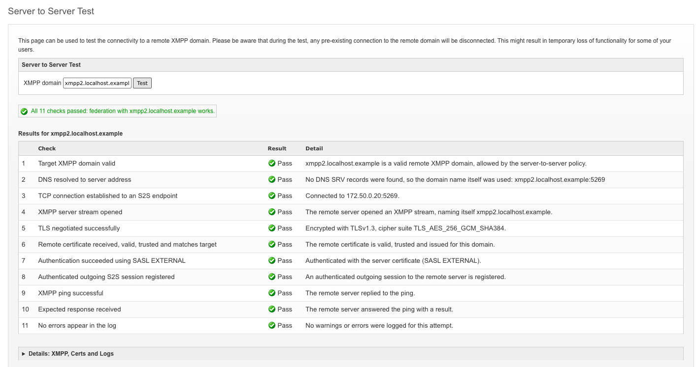
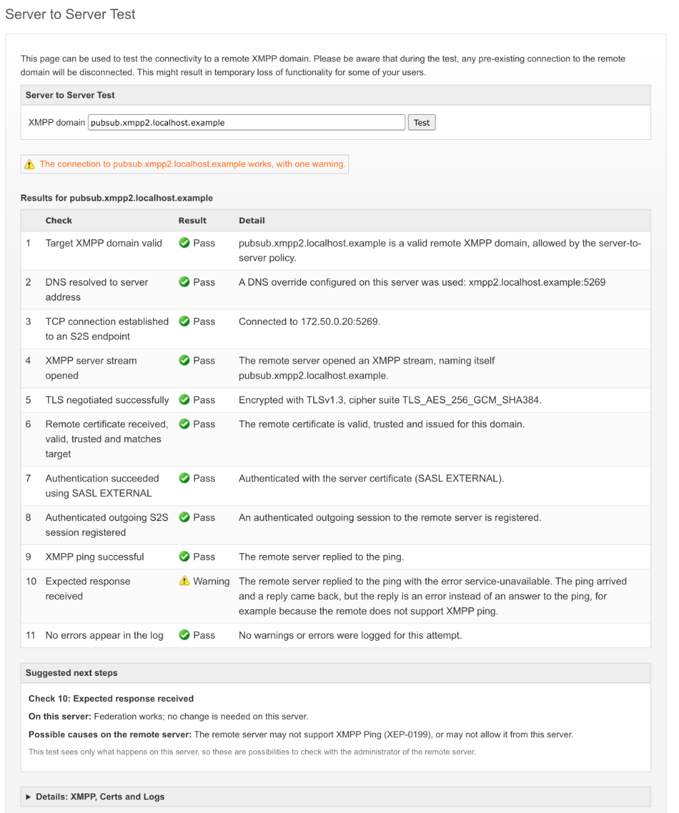
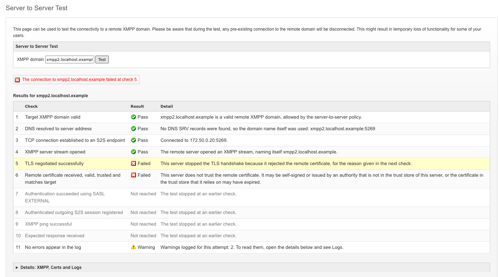

S2S Connection Test Guide
Introduction
Openfire connects to other XMPP domains (federates, so that the users of both domains can exchange messages) through server-to-server (S2S) connections. Setting up such a connection takes several steps: finding the remote server in DNS, connecting to it, opening an XMPP stream (the exchange of XML that carries all XMPP traffic over the connection), encrypting the connection with TLS, checking the remote certificate, and authenticating. When federation with a domain does not work, any one of these steps may be the cause.
The S2S Connection Test in the admin console makes a connection attempt to a remote domain and reports each of these steps as a check, with a pass, warning or failure, and a description of what happened. This guide describes what the test does, what each check verifies, and what each result means.
This guide contains the following topics:
Running the test
The test is in the admin console under Sessions / Tools / S2S Connection Test; the page
heading reads "Server to Server Test". Enter the XMPP domain of the remote server (for example
example.org) and press Test.
The test makes a real connection attempt from this server's XMPP domain to the remote domain, through the same code that Openfire uses for federation, and then sends an XMPP ping (XEP-0199) to the remote domain over the new connection. It reports what happened at each step of that attempt, and what came back from the ping.
To observe a new connection rather than one that already exists, the test first closes every existing server-to-server session with the remote domain, incoming and outgoing. This interrupts federation with that domain until the sessions are set up again. The page warns about this above the form.
The page shows the results when the test has finished. After closing the existing outgoing session, the
test waits for its connection to finish closing, for up to 5 seconds by default (the
xmpp.server.outgoing.close-wait-timeout property). It then waits for the ping reply for up to
the socket timeout (the xmpp.server.read.timeout property, 120 seconds by default), up to 10
more seconds for a connection attempt that is still in progress, and, when that attempt set up the session
only after the wait for the reply ran out, up to 5 more seconds for the reply. With the default close wait,
a test can therefore take up to the socket timeout plus 20 seconds. A test waits that long when the remote
server does not answer, for example when a firewall drops the connection or when the remote server cannot
connect back to this one.
If two administrators test the same domain on the same server at the same time, the second test waits for the first to finish.
Reading the results
The results consist of a summary line, a table with one row for each of the 11 checks, and the raw details of the test, collapsed below the table.
The summary line
The summary line gives the overall outcome. It shows the first of these that applies:
| Outcome | Summary line |
|---|---|
| A check failed | The connection to domain failed at check number. |
| No check failed, but one or more checks show a warning | The connection to domain works, with number warnings.(with one warning: "with one warning") |
| No check failed or warned, but one or more checks show "Not observed" | No check failed for domain, but some steps were not observed during this test. |
| Every check passed | All 11 checks passed: federation with domain works. |
The table
Each row of the table is one check, numbered in the order the steps of a connection attempt take place. The Result column gives the status of the check, and the Detail column says what happened. The row of the first failed check, which the summary line names, is highlighted.
- Pass
- The step took place during this test and succeeded.
- Warning
- The step succeeded in a way that is weaker than expected. For example, the remote server authenticated this server with Server Dialback (in which the receiving server checks the sender through DNS and a connection back to the sender's domain) instead of with its certificate.
- Failed
- The step took place and failed. The detail says why.
- Not reached
- The step did not take place, or did not succeed, because an earlier check failed. The detail reads:
The test stopped at an earlier check.
On a connection that went ahead without encryption, check 6 (the remote certificate) also shows "Not reached", with its own reason. - Not observed
- The test has no record of this step from this test's connection attempt, although no earlier check
failed. The detail reads:
This step did not take place on this server during this test, for example because another server in the cluster holds the connection to the remote domain.
A step that was not observed is never shown as passed.
After a failed check, some later checks still show their own result and others show "Not reached". How a failure affects later checks explains which, once the checks themselves have been described.



The checks
This section describes each check: what it verifies, every message it can show, and the settings of this
server that affect it. In the messages, the parts in italics are filled in with the values of
the test. Most settings named below are on the Server / Server Settings / Server to Server
page of the admin console, or on its Advanced configuration pages; the others are system
properties.
1. Target XMPP domain valid
Verifies, before any connection is made, that the entered value is an XMPP domain that this server can
connect to: a valid domain name, not served by this server, and allowed by the server-to-server policy
of this server. Before the check, surrounding spaces, a leading http:// or
https://, trailing slashes and a user part (as in user@example.org) are
removed from the entered value. When this check fails, the test does not close any sessions or make a
connection attempt.
| Result | Message | Meaning |
|---|---|---|
| Pass | domain is a valid remote XMPP domain, allowed by the server-to-server policy. |
The test goes ahead. |
| Failed | domain is not a valid XMPP domain. |
The value cannot be read as an XMPP domain name, for example because it holds spaces or other characters that a domain name cannot contain. |
| Failed | domain is served by this server, so there is no remote server to test. |
The domain is the XMPP domain of this server. |
| Failed | domain is a component of this server, so there is no remote server to test. |
The domain belongs to a service of this server, such as a group chat service or an external component. |
| Failed | domain is blocked by the server-to-server policy of this server. |
This server's settings do not allow server-to-server connections with the domain. |
Settings: the lists of allowed and blocked servers on the
Server to Server settings page.
2. DNS resolved to server address
Verifies that this server found an address for the remote domain. Openfire looks up the DNS SRV records
that a domain publishes for server-to-server connections (_xmpp-server._tcp, and
_xmpps-server._tcp for direct TLS, in which the connection is encrypted from the start
instead of being switched to TLS after it opens, with STARTTLS), as described in the
Network Configuration Guide. It also
tries the domain name itself, last; when the domain publishes no SRV records, that is the only address,
as RFC 6120 allows. A DNS
override configured on this server replaces the lookup. The detail lists the hosts and ports found (at most
10, followed by how many more there were); an entry for direct TLS is marked (direct TLS). When the domain publishes SRV records but the
connection could be made only to the domain name itself, check 3 (TCP) warns.
| Result | Message | Meaning |
|---|---|---|
| Pass | DNS SRV records found: hosts and ports |
The domain publishes SRV records, and these are their targets. |
| Pass | A DNS override configured on this server was used: hosts and ports |
DNS was not consulted for this domain; the address comes from this server's configuration. |
| Pass | No DNS SRV records were found, so the domain name itself was used: host and port |
The domain publishes no SRV records, so Openfire uses the domain name as the host name. This is allowed, and works when the domain name resolves to the remote server. |
| Failed | No address was found for domain. The domain may be misspelled, or it may not be set up for server-to-server connections. |
Neither SRV records nor an address for the domain name itself were found. |
Settings: DNS overrides (Server / Server Settings / DNS Overrides); the
port used for the domain name itself, which is the port on the domain's entry in the list of allowed
servers on the Server to Server settings page, or otherwise
xmpp.server.socket.remotePort (5269 by default). DNS itself is resolved by the operating
system of this server.
3. TCP connection established to an S2S endpoint
Verifies that this server opened a network connection to one of the addresses found in check 2 (DNS). Openfire tries the addresses in the order of their DNS priority, and may try several at the same time (see Happy Eyeballs). When every address refused the connection, or every address timed out, the check says so; when the addresses failed in different ways, or for another reason, the detail lists what happened at each address. When a connection was made only after every address of a higher DNS priority failed, the check warns and lists them: Openfire moves to the next priority only when every address of the current one has failed, so those addresses slow down every new connection. An address that fails while another address of the same priority connects, such as an IPv6 address that this server cannot reach beside an IPv4 address that works, delays nothing and does not cause a warning. A detail lists at most 10 addresses, followed by how many more there were.
| Result | Message | Meaning |
|---|---|---|
| Pass | Connected to address and port. |
The address and port of the connection that the rest of the attempt used. No address of a higher DNS priority failed before it. |
| Warning | Connected to address and port, after the connection to other addresses failed: what happened at each address. Those addresses may be out of date, or the servers at them may be down. |
The connection works, but every address of a higher DNS priority (such as the server that the highest-priority SRV record names) did not answer or refused the connection, and each new connection waits for them to fail. Each is listed with what happened to it. |
| Warning | Connected to address and port, the address of the domain name itself, after the connection to the servers that the DNS SRV records name failed: what happened at each address. The SRV records of the domain may be out of date, or those servers may be down. |
The domain publishes SRV records, but no server they name accepted the connection; Openfire then tried the domain name itself, and that worked. Servers that follow RFC 6120, which says not to try the domain name itself once SRV records are found, cannot connect. |
| Warning | Connected to address and port, the address of the domain name itself, as none of the servers that the DNS SRV records name had an address that this server could try. The SRV records of the domain may be out of date. |
The domain publishes SRV records, but the hosts they name have no address in DNS (or only addresses of a connection type that this server does not use); Openfire then tried the domain name itself, and that worked. Servers that follow RFC 6120 cannot connect. |
| Failed | The connection to addresses and ports was refused: nothing is accepting connections on that port. The remote server may not be running, or may not accept server-to-server connections. |
The remote host answered, and rejected the connection on that port. |
| Failed | The connection to addresses and ports timed out. A firewall may be blocking the connection, on this network or on the remote one. |
No answer came back to the connection request before this server, or its operating system, stopped waiting. |
| Failed | The connection to addresses and ports failed: reason |
The connection failed for another reason given by the network, such as no route to the host, or the addresses failed in different ways. The reason lists each address with what happened to it. |
| Failed | Addresses were found, but no connection to any of them was attempted, for example because each uses a connection type (direct TLS or not) that this server does not accept for server-to-server connections. |
DNS found addresses, but this server tried none of them, for example because its own listener for that connection type is disabled. |
Settings: xmpp.server.read.timeout (the socket timeout, also used for the
connection, 120 seconds by default; an operating system may give up on a connection earlier); the
Happy Eyeballs properties described in the
Network Configuration Guide; DNS
overrides, which decide the addresses tried.
4. XMPP server stream opened
Verifies that the remote server answered the connection with an XMPP stream header, which shows that an XMPP server is listening on the port. The detail gives the domain name that the remote server stated in its stream header.
| Result | Message | Meaning |
|---|---|---|
| Pass | The remote server opened an XMPP stream, naming itself name. |
An XMPP server answered, under the name shown. |
| Pass | The remote server opened an XMPP stream without stating its name. |
An XMPP server answered. Stating a name in the stream header is optional. |
| Failed | The remote server closed the connection without opening an XMPP stream. The port may belong to a service other than XMPP. |
The connection was accepted and then closed by the remote side before any XMPP stream started. |
| Failed | The remote server refused the stream with the error: error |
The remote server sent an XMPP stream error before the TLS step (check 5)
had a result. The error gives the
condition (for example host-unknown, when the remote server does not serve the
domain), and any text the remote server added. |
| Failed | The remote server accepted the connection, but did not open an XMPP stream within number seconds, after which this server stopped waiting. The remote server may be overloaded, or the port may belong to a service other than XMPP. |
The connection stayed open without an answer until this server gave up on setting up the session. |
| Failed | The remote server answered without a stream ID, which XMPP requires, so this server closed the connection. Some servers leave out the stream ID when they refuse a stream with an error. |
The remote server's stream header was incomplete. |
Settings: xmpp.server.session.initialise-timeout (how long this server
waits for an outgoing session to be set up, 10 seconds by default).
5. TLS negotiated successfully
Verifies that the connection was encrypted with TLS. Over STARTTLS, the remote server offers encryption in its stream features (the list of options a server announces at the start of a stream) and this server asks to start it; over direct TLS, the handshake starts as soon as the connection is made. During the handshake, this server checks the remote certificate chain against its trust store (the certificates and certificate authorities that this server trusts), so an untrusted, expired, not yet valid or revoked certificate stops the handshake here, and check 6 (the remote certificate) says which.
| Result | Message | Meaning |
|---|---|---|
| Pass | Encrypted with protocol, cipher suite cipher suite. |
The TLS protocol version and cipher suite that the connection uses. |
| Failed | The remote server does not offer TLS encryption, which this server requires. |
The remote server's stream features hold no STARTTLS offer, and this server's STARTTLS policy is Required, so the attempt ends. |
| Failed | The remote server offers TLS encryption, but refused it when this server asked to start it. The TLS setup of the remote server may be incomplete, for example without a certificate. |
The remote server answered the request to start TLS with a failure. |
| Failed | The TLS handshake failed: reason |
The handshake failed for a reason other than this server rejecting the remote certificate, for example because the two servers have no TLS protocol version or cipher suite in common. The reason is the one given by Java's TLS implementation, cut to 200 characters. When Server Dialback is enabled and the STARTTLS policy is not Required, Server Dialback over a new unencrypted connection may follow; check 7 (authentication) reports it. |
| Failed | The remote server did not answer with TLS. The port it was reached on may expect an unencrypted connection, for example when a DNS SRV record for direct TLS (xmpps-server) names a port that does not use it. |
Over direct TLS, the remote server answered the TLS handshake with something other than TLS,
such as the start of an unencrypted XMPP stream. Check the domain's
_xmpps-server SRV records against the ports its server listens on. |
| Failed | This server stopped the TLS handshake because it rejected the remote certificate, for the reason given in the next check. |
The handshake reached the certificate, and this server's trust store did not accept it. Check 6 (the remote certificate) gives the reason. |
| Warning | The connection works, but is not encrypted. The STARTTLS policy of this server allows server-to-server connections without TLS, and TLS was not set up. |
The remote server did not offer TLS and this server's STARTTLS policy is Optional, or this server's STARTTLS policy is Disabled and the remote server does not require TLS. The attempt carries on without encryption: check 6 (the remote certificate) shows "Not reached", as no certificate is exchanged, and the later checks show their own results. |
| Failed | The remote server requires TLS encryption, but the STARTTLS policy of this server disables it, so this server closed the connection. |
This server's STARTTLS policy is Disabled, and the remote server requires TLS. The attempt ends here, and the later checks show "Not reached". |
| Failed | The remote server accepted the connection, but did not complete the TLS handshake within number seconds, after which this server stopped waiting. The remote server may be overloaded, or the port may not serve direct TLS. |
Over direct TLS, the connection stayed open without completing the handshake until this server gave up on setting up the session. |
| Failed | The remote server opened an XMPP stream, but encryption was not set up within number seconds, after which this server stopped waiting. |
Over STARTTLS, the stream opened, but encryption was still being set up when this server gave up on setting up the session. |
| Failed | The remote server closed the connection before encryption was set up. |
Over STARTTLS, the stream opened, and the remote server closed the connection while encryption was being set up, without sending a stream error. |
Settings: the STARTTLS policy (Disabled, Optional or Required) under
Advanced configuration on the Server to Server settings page
(xmpp.server.tls.policy); the certificate settings listed under check 6 (the remote certificate), which decide
whether the handshake accepts the remote certificate; xmpp.server.session.initialise-timeout
for the direct TLS timeout.
6. Remote certificate received, valid, trusted and matches target
Verifies four properties of the certificate that the remote server presented: that there is one, that it is within its validity dates, that this server trusts it (it is issued by an authority in this server's trust store, or is itself in that store), and that it is issued for the remote domain. A certificate that passes all four shows that the remote server is the one it claims to be. Dates are shown in UTC.
| Result | Message | Meaning |
|---|---|---|
| Pass | The remote certificate is valid, trusted and issued for this domain. |
All four properties hold. |
| Not reached | No certificate is exchanged on an unencrypted connection. |
The connection went ahead without TLS, as this server's STARTTLS policy allows (check 5 shows a warning). |
| Failed | The remote server did not present a certificate. |
The encrypted connection carries no certificate from the remote server. |
| Failed | The remote certificate expired on date and time. |
The certificate's end date has passed. |
| Failed | The remote certificate is not valid until date and time. |
The certificate's start date is in the future, as seen by this server's clock. |
| Failed | This server does not trust the remote certificate. It may be self-signed or issued by an authority that is not in the trust store of this server, or the certificate in the trust store that it relies on may have expired. |
No chain could be built from the certificate to a certificate in this server's trust store that is currently valid. |
| Failed | The remote certificate has been revoked by its issuer. |
Revocation checking found the certificate on its issuer's revocation list or OCSP response. |
| Failed | The remote certificate is not issued for domain. It names: names |
The certificate is valid and trusted, but none of the names it holds is the remote domain. The detail lists at most 10 names, followed by how many more there were. This is found after the handshake, so check 5 (TLS) passes. |
After a certificate failure, the attempt ends when strict certificate validation is on (the default), and the later checks show "Not reached". When it is off, what happens next depends on whether the handshake completed. When this server stopped the handshake, it tries Server Dialback over a new unencrypted connection, provided that Server Dialback is enabled and the STARTTLS policy is not Required; otherwise the attempt ends. When the handshake completed and the certificate failed after it (for example on its name), authentication goes ahead over the encrypted connection, provided that Server Dialback is enabled or self-signed certificates are accepted. Check 7 (authentication) reports the outcome.
Accepting self-signed certificates, or not verifying certificate validity dates, lets the TLS handshake complete with such a certificate. These settings do not change the verdict on the certificate: this check still fails, with the reason the certificate falls short, and check 5 (TLS) passes.
Settings: the trust store for server-to-server connections
(Server / TLS Certificates / Certificate Stores, the Server to Server trust store); under Advanced configuration on the
Server to Server settings page, the "Certificate chain checking" options (allow peer
certificates to be self-signed, xmpp.socket.ssl.certificate.accept-selfsigned; verify that the
certificate is currently valid, xmpp.socket.ssl.certificate.verify.validity; verify that
certificates have not been revoked, described in the
TLS Guide) and the option to treat invalid TLS certificates as
fatal (strict certificate validation, xmpp.socket.ssl.certificate.strict-validation).
7. Authentication succeeded using SASL EXTERNAL
Verifies how the remote server authenticated this server's connection. With SASL EXTERNAL, the remote server accepts this server's certificate as proof of its identity. With Server Dialback (XEP-0220), the remote server verifies this server through DNS and a connection back to it, without relying on certificates. Authentication with Server Dialback shows a warning; failed authentication is a failure.
| Result | Message | Meaning |
|---|---|---|
| Pass | Authenticated with the server certificate (SASL EXTERNAL). |
The remote server accepted this server's certificate. |
| Warning | Authenticated with Server Dialback, because the remote server did not offer certificate login (SASL EXTERNAL). |
The remote server's stream features held no SASL EXTERNAL offer, so this server used Server Dialback. Openfire offers SASL EXTERNAL only to a server whose certificate it trusts, so when the remote server is Openfire, this usually means it does not trust this server's certificate. |
| Warning | Authenticated with Server Dialback, because the remote server refused certificate login (SASL EXTERNAL). The remote server may not trust the certificate of this server. |
This server tried SASL EXTERNAL, the remote server refused it, and Server Dialback succeeded. |
| Warning | Authenticated with Server Dialback rather than with the server certificate (SASL EXTERNAL). |
Server Dialback succeeded, and the test does not know why SASL EXTERNAL was not used. This is the message after a failed TLS handshake, when Server Dialback over a new unencrypted connection succeeded (the TLS check, check 5, then shows the handshake failure). |
| Failed | The remote server refused certificate login (SASL EXTERNAL), and Server Dialback is disabled on this server. The remote server may not trust the certificate of this server. |
SASL EXTERNAL was refused, and this server had no other method to try. |
| Failed | The remote server refused Server Dialback. It may be unable to connect back to this server to verify it. |
The remote server answered the dialback request with a failure. To verify this server, the remote server looks up this server's domain in DNS and connects to it, so a DNS or firewall problem in that direction makes dialback fail. |
| Failed | The remote server offered no authentication method that this server can use: neither certificate login (SASL EXTERNAL) nor Server Dialback. Certificate login needs an encrypted connection; Server Dialback may be disabled on either server. |
The remote server offered neither method, or offered only Server Dialback while it is disabled on this server. |
| Failed | The remote server ended the stream during authentication with the error: error |
The remote server sent an XMPP stream error during authentication. The stream itself had opened, so check 4 (the XMPP stream) passes. |
| Failed | After the TLS handshake failed, this server tried Server Dialback over an unencrypted connection, and that failed too. |
The handshake failed (check 5, TLS), Server Dialback is enabled and the STARTTLS policy is not Required (and, when the handshake failed on the certificate, strict certificate validation is off), so this server opened a new connection without TLS for Server Dialback, which failed. |
| Failed | Authentication did not complete within number seconds, after which this server stopped waiting. With Server Dialback, the remote server may be unable to connect back to this server to verify it. |
Authentication was under way when this server gave up on setting up the session. With Server Dialback the remote server checks this server by connecting back to it, so a DNS or firewall problem in that direction can leave authentication waiting. |
| Failed | The remote server closed the connection before authentication completed. |
The remote server closed the connection during authentication, without sending a stream error. |
Settings: Server Dialback (xmpp.server.dialback.enabled; this server also
uses Server Dialback when it accepts self-signed certificates); strict certificate validation and the
STARTTLS policy, which decide whether Server Dialback is tried after a certificate or handshake
failure (see check 5, TLS, and check 6, the remote certificate); this server's own certificate, which the remote server checks for SASL
EXTERNAL.
8. Authenticated outgoing S2S session registered
Verifies that, after the attempt, this server holds an authenticated outgoing session to the remote domain, through which it can send to that domain.
| Result | Message | Meaning |
|---|---|---|
| Pass | An authenticated outgoing session to the remote server is registered. |
The session is in place. It is listed under Sessions / Active Sessions / Server Sessions. |
| Failed | No outgoing session to the remote server was registered. |
No session was set up. When check 7 (authentication) failed or was not reached, this check shows "Not reached" instead. |
9. XMPP ping successful
Verifies that the ping reached the remote server and that a reply came back from it. Any reply from the remote server passes this check, including an error, because it shows that traffic reaches the remote server and returns. Server-to-server connections carry traffic in one direction, so the remote server sends its reply over its own connection to this server; this check therefore also depends on the remote server being able to connect to this one.
When Openfire cannot deliver a stanza (a single unit of XMPP traffic, such as a message or the ping)
to a remote domain, it answers the sender itself with an error
such as remote-server-not-found, addressed as if from the remote domain. The test tells
this apart from a reply by the remote server: when the ping never left this server, any reply is this
server's own.
| Result | Message | Meaning |
|---|---|---|
| Pass | The remote server replied to the ping. |
The ping was sent over the outgoing session, and the remote server replied. |
| Failed | No reply to the ping arrived in time. The remote server may be unable to connect back to this server. |
No reply arrived within the socket timeout. When the session was set up only after that wait ran out (for example because an address that did not answer used up most of it), the ping was sent late, and the test waits up to 5 more seconds for its reply before this check fails. |
| Failed | Only this server answered the ping, with the error condition: the ping did not reach the remote server. |
The ping was never sent to the remote server, and the error came from this server. |
Settings: xmpp.server.read.timeout (how long the test waits for the
reply).
10. Expected response received
Verifies that the remote server answered the ping with a result, which shows that it understood and answered the ping itself. A server that does not support XMPP ping, or a domain that belongs to a service rather than to a server, may answer with an error instead; that error still proves the round trip, so it is a warning.
| Result | Message | Meaning |
|---|---|---|
| Pass | The remote server answered the ping with a result. |
The ping was answered. |
| Warning | The remote server replied to the ping with the error condition. The ping arrived and a reply came back, but the reply is an error instead of an answer to the ping, for example because the remote does not support XMPP ping. |
The remote server replied with an error, for example service-unavailable. |
When no reply came from the remote server, check 9 (the ping) has failed, and this check shows "Not reached".
11. No errors appear in the log
Verifies that this server logged no warnings or errors for this connection attempt. A warning or error counts for the attempt when it is in the attempt's step-by-step diagnostic log (see Failed connections outside the test), or when the outbound connection code logged it while handling this attempt. A warning logged for the attempt makes this check a warning; an error makes it a failure.
The server may log other warnings and errors while the test runs, about the remote domain or about anything else it is doing at the time. These are reported as other: they are counted in the detail, marked as possibly unrelated, and do not change the result of the check. The warnings and errors themselves are in the log of the raw details.
This check is judged on every attempt, even after an earlier check failed. It shows "Not observed" when no connection attempt of this test had finished, for example when another cluster node (another Openfire server in the same cluster) holds the route to the domain (the connection over which the cluster sends to that domain).
| Result | Message | Meaning |
|---|---|---|
| Pass | No warnings or errors were logged for this attempt. |
Nothing to report. |
| Pass | No warnings or errors were logged for this attempt. Other warnings or errors logged during the test, possibly unrelated: number |
The attempt logged nothing; the server logged other warnings or errors while the test ran. |
| Warning | Warnings logged for this attempt: number. To read them, open the details below and see Logs. |
The attempt logged warnings and no errors. |
| Warning | Warnings logged for this attempt: number. Other warnings or errors logged during the test, possibly unrelated: number. To read them, open the details below and see Logs. |
As above, and the server logged other warnings or errors while the test ran. |
| Failed | Errors logged for this attempt: number. Warnings: number. To read them, open the details below and see Logs. |
The attempt logged errors. |
| Failed | Errors logged for this attempt: number. Warnings: number. Other warnings or errors logged during the test, possibly unrelated: number. To read them, open the details below and see Logs. |
As above, and the server logged other warnings or errors while the test ran. |
This check does not depend on the log level: the attempt's warnings and errors are counted whether or not the server's log level shows them. With trace logging on, the log in the raw details holds more detail, and the result of this check is the same.
How a failure affects later checks
Openfire carries on past some failures: after a failed TLS handshake, or after it rejects the remote certificate, it can still go on to authentication under some settings (check 5 and check 6 describe when). A step that still ran after a failure shows its own result, so a table can show a failed check followed by checks that pass.
A connection that goes ahead without encryption, as this server's STARTTLS policy allows, works, so check 5 shows a warning, and check 6 shows "Not reached", as no certificate is exchanged.
Checks 8 to 10 (the session, the ping and the reply) work differently. Each shows "Not reached" instead of failing when the check just before it failed or was not reached, and the table then highlights only the earlier failure. A step that passes or warns after a failure clears this. For example, when this server rejects the remote certificate (check 6 fails), Server Dialback succeeds (check 7 shows a warning) and the ping then times out, check 9 shows its own failure.
When the remote server closes the connection, or this server stops waiting, part way through the attempt, the step that was under way fails: check 4 (the stream), check 5 (TLS) or check 7 (authentication), whichever had not completed. When the remote server sent a stream error first, that error is shown instead.
Check 11 (the log) is judged on every attempt, even after a failure. When check 1 (the domain) fails, no connection attempt is made and every other check shows "Not reached".
When the remote server uses direct TLS (shown in check 2, DNS), the TLS handshake comes before the XMPP stream, so the checks for TLS and the remote certificate (check 5 and check 6) take place before the check for the stream (check 4). A failed handshake then leaves the stream check "Not reached".
The raw details
Below the table, the collapsed section "Details: XMPP, Certs and Logs" holds what the test captured, for reading alongside the checks or for sharing with the administrator of the remote server:
- XMPP
- Every stanza sent to or received from the remote domain while the test ran, including the ping and any reply to it.
- Certs
- The certificates that the remote server presented on the session set up during the test, in PEM form. It is empty when no session was set up, or when the session is not encrypted.
- Logs
- Everything the server logged while the test ran, each line with its level, including lines about other
activity on the server. When the connection attempt made during the test has finished, its
step-by-step diagnostic log follows, under the heading
--- Authentication attempt diagnostic log ---. A diagnostic log longer than about 16,000 characters keeps its first and last lines, with one line saying how many were left out between them. At the default log levels, the log holds few lines for a successful attempt; with trace logging on, it holds every step.
Failed connections outside the test
Openfire records a step-by-step diagnostic log for every outgoing server-to-server connection attempt,
whether or not it was made by the test. When the latest outgoing attempt to a domain failed,
Sessions / Active Sessions / Server Sessions shows a Diagnostics link for the
domain, even beside a working incoming session from it; the link goes once a later attempt succeeds. The link
opens the failed-session details page, which shows the reason for the failure and, under
"Authentication attempt log", the diagnostic log of the latest failed attempt. Its lines describe the same
steps as the checks of the test: what DNS returned, the connection to each address, the stream, TLS and
the certificate, and authentication.
The page's Retry now button opens the S2S Connection Test with the domain filled in. The test
runs when you press Test.
Limitations
- The test sees only this server's side of the connection. It reports what this server sent, received and decided. It cannot see the remote server's configuration or logs, or why the remote server refused something, beyond what the remote server said.
- In a cluster, the reply to the ping reaches the test whichever cluster node it arrives on. When another cluster node holds the route to the remote domain, that node sends the ping, and this server cannot see whether it did. The test then judges only a result, which the remote server alone sends: an error reply or a missing reply leaves check 9 (the ping) and check 10 (the reply) "Not observed". Steps of a connection attempt made on the other node are also not observed.
- An expired certificate that this server trusts directly (for example a self-signed certificate imported into the trust store) reads as untrusted on check 6 (the remote certificate), without the expiry date. An expired certificate in the trust store does not count as trusted, so the TLS implementation reports only that no trusted chain was found.
- Accepting self-signed certificates, or not verifying certificate validity dates, lets only the TLS handshake through. Check 6 (the remote certificate) still fails with the reason the certificate falls short.
- After a failed TLS handshake, the warnings that Server Dialback logs during its fallback over a plain connection are counted on check 11 (the log) among the other warnings, as possibly unrelated. The warning that the outbound connection code logs when that fallback fails does count for the attempt.
-
A test can take up to the socket timeout (
xmpp.server.read.timeout, 120 seconds by default) plus 20 seconds (see Running the test), and the page shows nothing until the test has finished.